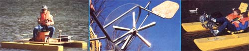
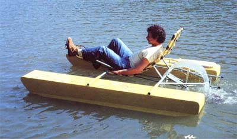
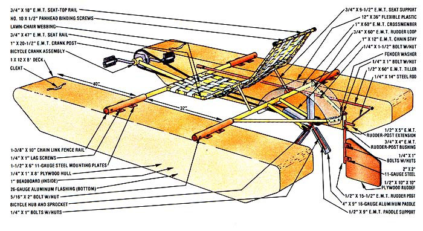
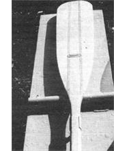
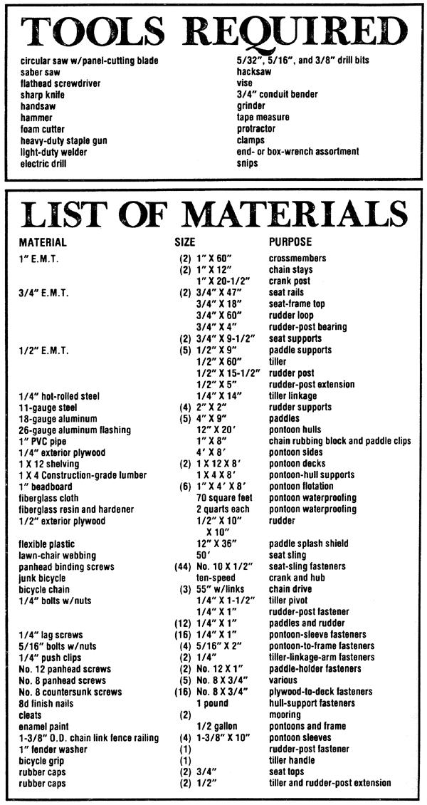

This is the season to explore the nooks and crannies of a nearby pond or lake by relaxing...
When the high summer sun brings on the sultry days of July and August, many people head for water to obtain relief from the heat . . . and MOM's research staff members are no exception. The lure of the 11acre lake at MOTHER's Eco-Village is a great temptation at this time of year. And as a result, our flotilla of unique pond craft has grown-from the sailing and trolling canoe we reported on in our last issue-to include a pontoon boat that can be set up for a leisurely pedal-powered cruise or for prowling remote coves for bass.
In the spirit of "more from less", Dennis Burkholder and Robyn Bryan have developed a switchable flotation system to which many different frames and/or decks can be rigged. And though we've pictured three versions here including one- and two-seat pedal boats and a fishing platform equipped with an electric trolling motor-we believe that these possibilities will merely open the hatch to even more creative ideas from inventive readers!
Consequently, we're going to show you how Robyn and Dennis built their pontoons and then review the construction of one option: the one-person recumbent pedal frame. With that background, you should be able to adapt these designs to produce the pond vessel of your choice to suit your own needs.
To achieve sufficient buoyancy for two adults, Dennis and Robyn decided to fabricate pontoons with cores made of solid expanded polystyrene foam (also known as beadboard), rather than attempt to adapt the PVC sewerpipe and foam-bead floats they used on the outrigger canoe. The skin for each unit consists of 1/4" plywood sides, a 1 X 12 deck, and aluminum flashing undersides. These materials are waterproofed and made rigid with a layer of fiberglass cloth and resin.
Start by sawing a 1/4" X 4' X 8' sheet of plywood into four 1'-wide strips and shaping them to the desired profile (for easy cruising over the bounding main) with a saber saw. Then screw the laminated boards to the edges of the 1 X 12 deck to close in three sides of each pontoon. Next, slice off 11-1/2" widths from the beadboard sheets with a sharp knife, and fill the inside of the hull with slabs of the material . . . to a level about 1 inch short of the lip.
At this point, cut off three 11-1/2" pieces of 1 X 4 for each float, slip these braces between the plywood sheets so that they're evenly spaced along the unit's length, and nail them in place. Now, fill the spaces between the 1 X 4's with sections of headboard cut to size.
You can use the plywood walls as a template for trimming off the excess foam hanging out beyond the hull's profile. An electrically heated wire does the neatest and ,quickest job, but a bit of persistence with a 'handsaw will also work.
Robyn and Dennis used a heavy-duty staple gun to fasten the aluminum flashing to the underside of the hull . . . but for a little extra security, they also folded the end of each sheet over and attached it to the ends of the 1 X 12 with a couple of No. 8 X 3/4" pan head screws. Of course, the fiberglass cloth (about 35 square feet per unit) and resin give the pontoons their real strength.
Once the fiberglass had dried, our craftsmen perked up the appearance of the floats by adding a coat of enamel paint. The mariners also screwed on cleats and canoe paddle clamps-for use in the event that a chain derails or some other mechanical problem crops up-made from split 1 " PVC pipe.
To finish off the flotation cells, Dennis and Robyn needed to fabricate and mount the four sleeves that would accept the two main frame rails. They made these parts by welding mounting plates to 10" sections of 1-3/8" O.D. (outside diameter) chain link fence railing. The mounts were, in turn, secured to the deck with 1/4" X 1 " lag screws at points 40 and 72 inches from the pontoon bows. Toward the outer end of each sleeve, a 3/8" hole was drilled so that the frame could be secured to the finished floats with bolts and nuts.
Well, now that you have the basic "body" of a boat, let's look at what you can do with it! In the last issue of MOTHER, we showed you a pontoon-equipped canoe and a recumbent tricycle . . . separately. Over the last two months, however, those two concepts have become hybridized, to yield our recumbent bicycle-based pontoon paddlewheel boat! (Quite a mouthful, eh?) This project requires a few parts from an old bicycle. If you can acquire a junked ten speed, its removable rear sprockets will ease the assembly process.
To insure that the two main crosspieces are positioned properly, slide the 1" X 60" lengths of E.M.T. into the sleeves on the pontoons until the ends of the tubes are flush. Using the existing holes as guides, drill all the way through the frame tube ends with a 3/8" bit, and secure the tubes with 5/16" X 2" bolts with nuts.
Now, take two 3/4" X 47" sections of E.M.T. and bend them 35° using a conduit bender at points 13-1/2 inches and 32-1/2 inches along their lengths. These tubes, set 16 inches apart, will form the backrest of the recumbent seat. Cut two more 3/4" X 9-1/2" sections that will support the seat frame on the rear cross member. Clamp all the tubes in position (as shown in the drawing), and weld the joints together. To complete the frame, bridge the top of the seat rails with a 3/4" X 18" tube, leaving 1 inch hanging over each end.
The two chain stays that support the paddle wheel are made of 1 " X 12" E.M.T. with the last 2 inches of each tube section pinched flat in a vise and a 1/2" X 2" slot cut into the crimps for the bicycle axle to slide into. These two tubes are welo,..! to the rear cross member I-3/4 inches v each side of the center and angled dov a ward 25 °.
To construct the paddle-wheel its weld five 1/2" X 9" lengths of E.M.T. 1 around the center of the bicycle's front hub (be sure to temporarily remove the bearings first so they won't be damaged by the heat.
This task will be easier if you secure t":, hub on its side, sliding spacers beneath the E.M.T. to help position the "spoke. Next, fold 1 inch on each side of the 4" 9" aluminum sheets to 90°, so that a scow; shaped, 2 "-wide paddle is formed. Drill to 5/16" holes through each spoke and paddle .. and bolt the pieces together.
Before you slip this water-pushing unit into the chain stays, it's also a good idea go ahead and weld the sprocket you've cho seen (we used one with 16 teeth) to the stat board side of the hub. Then replace the bearings and axle, and secure the paddhub assembly in the chain stays.
Form a 3/4" X 60" E.M.T. section in the rudder support loop by bending it 4 in the middle and welding the ends to t ::. rear cross member so that it's centered. the back of the bend, tack on a 3/4" X piece of the same material (with a 3/4 wide, 2"-deep slot running up the bath, making its top an inch above the rudder loop. This vertical 4" piece will serve as t' bushing for the rudder shaft.
That shaft consists of a 1/2" X 15-I piece of E.M.T. with two sets of 2"square:, 11gauge tabs welded 2 inches and 6 inc! above its bottom so that they can "grass" , the 1/2" plywood rudder. A 1/2" X 5" piece of E.M.T. is also welded at a point 11inches up the shaft, and in the same plane as the rudder, to serve as the tiller linkage.This entire poviting assembly hangs in its 3/4"us hung from bolt with a fender washer that's secured to a nut welded inside the top of the shaft.
The rudder itself is simply a 10" square of 1/2" plywood with a triangle trimmed off to leave one 7" side. You'll want to round of the corners (consult the illustration). This slab of wood is held in the metal clamps on the rudder post by 1/4" X 1 " bolts and nuts. Of course, this will necessitate first boring 5/16" holes through both the metal and the plywood.
A 1/4" X 14" steel rod-with a 90° bend 1 inch in from each end-links the rudderpost extension arm to the lengthy tiller handle. The rod is connected to both pieces of E.M.T. through 5/16" holes ... and secured with push clips. The 60"-long 1/2" E.M.T. tiller arm pivots on a 1/4" X 1-1/2" bolt that's welded to the underside of the rudder support loop 4 inches up its length on the starboard side and 21 inches from the tiller's aft end. Double nuts hold the arm in place without locking it down. From that point, the tiller passes under the rear cross member and then over the front cross member. A plastic bicycle grip makes the completed steerer easier to handle.
Now that the water-beater is in place, it's time to move up to the front of the boat. Dennis and Robyn used a 20-1/2" length of 1" E.M.T. as the crank post, but you may need to adjust that dimension to fit the legs of the person who'll be using the craft most often. In any event, angle that post upward at about 10 ° to prevent the underside of the peddler's thigh from rubbing uncomfortably on the front cross member. Next, cut the crank cylinder and pedal assembly from your bicycle frame, grind down any rough surfaces, and weld the mechanism squarely across the end of the crank post.
With all the welding done, this would be a good time to apply a protective coat of paint to the boat's frame. (First, though, you'll probably want to remove the frame from the pontoons to keep over spray from getting on the already coated fiberglass surfaces.)
The final steps in preparing the pedal boat are merely a matter of adding the details. Because there's a good chance that the chain wheels on the bicycle you salvage won't be the same size as the ones we used, we can only tell you that approximately three 55" lengths will be needed to link the pedals to the paddles. We've found that a section of split 1" PVC pipe-screwed to the underside of the front cross member where the chain will pass prevents the chain from grinding into the E.M.T. You'll probably also want to apply rubber caps over the open pipe ends on the seat top and the tiller and rudder parts.
Unless you'll be doing your laid-back boating in a bathing suit, you're also likely to find that a splash shield is a worthwhile addition to the paddle boat . . . particularly if you decide to try reverse! We cut ours from a scrap piece of Filon greenhouse glazing and screwed it to the rear cross member and rudder loop with No. 8 X 3/4" pan head sheet metal screws.
You'll need about 50 feet of lawn-chair webbing to make the 16 horizontal passes and the 6 vertical ones that make up the sling seat. These rows should be woven together and fastened to the seat rails by folding the material over and screwing it to the tubes (through 5132" drilled holes), at approximately 3-1/2" intervals, with No. 10 binding screws.
Since a pond-faring environment is a bit harsher than bicycle chains are used to, you'll probably need to oil the drive links fairly frequently. But other than that, the maintenance on the pedal cruiser should be minimal. Do take the precaution of wearing a life preserver, though ... and while you're out basking-or basing--don't forget the sunscreen!
|
 A split section of 1"" PVC pipe fasten,' to the deck secures the paddle in place as the rudder, to serve as the tiller linkage. This entire pivoting assembly hangs in its 3/4"" bushing from a bolt with a fender washer that's secured to a nut welded inside the top of the shaft. |
 |
 |
|
 |
 |
|